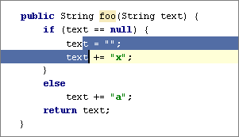
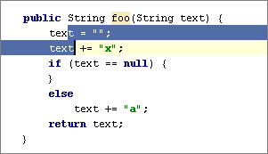
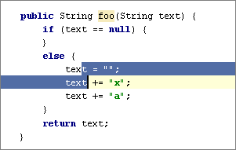

The Code | Move Statement Up/Down action is useful for reorganizing the code lines in your file, e.g., for bringing a variable declaration closer to variable usage.
Select a code fragment and press &shortcut:MoveStatementUp; or &shortcut:MoveStatementDown;.
The following pictures show an initial location of a code fragment, and the results of moving the selected fragment up and down.



When nothing is selected in the editor, the line at the cursor will be moved.